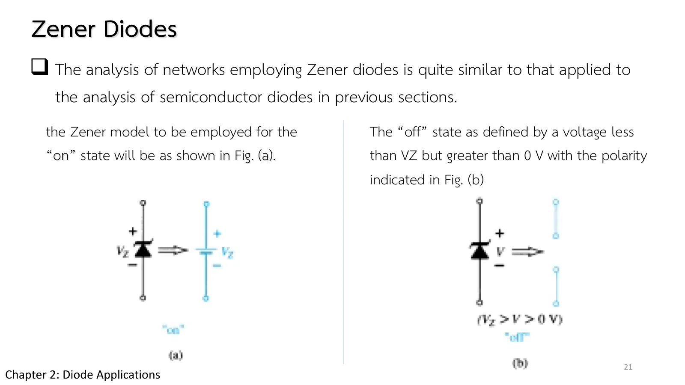
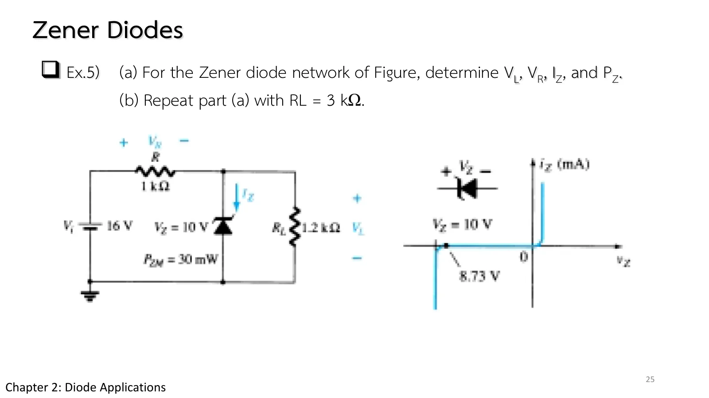
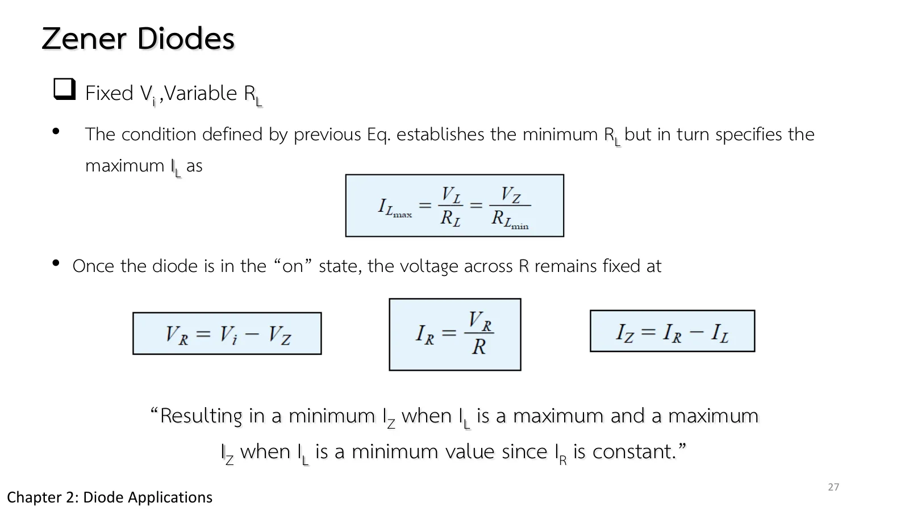
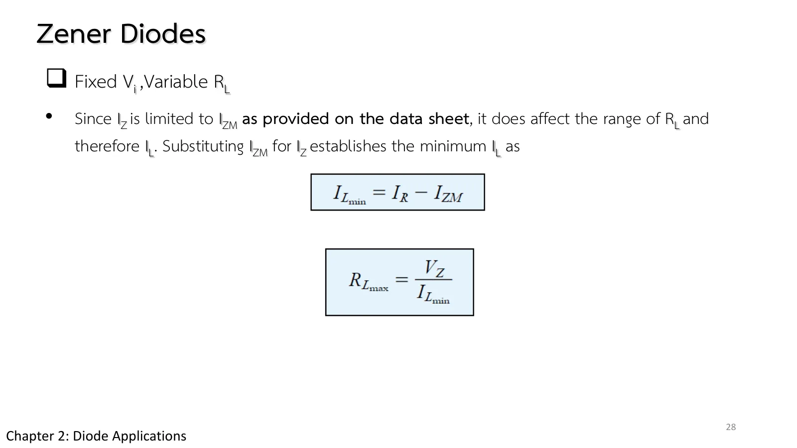
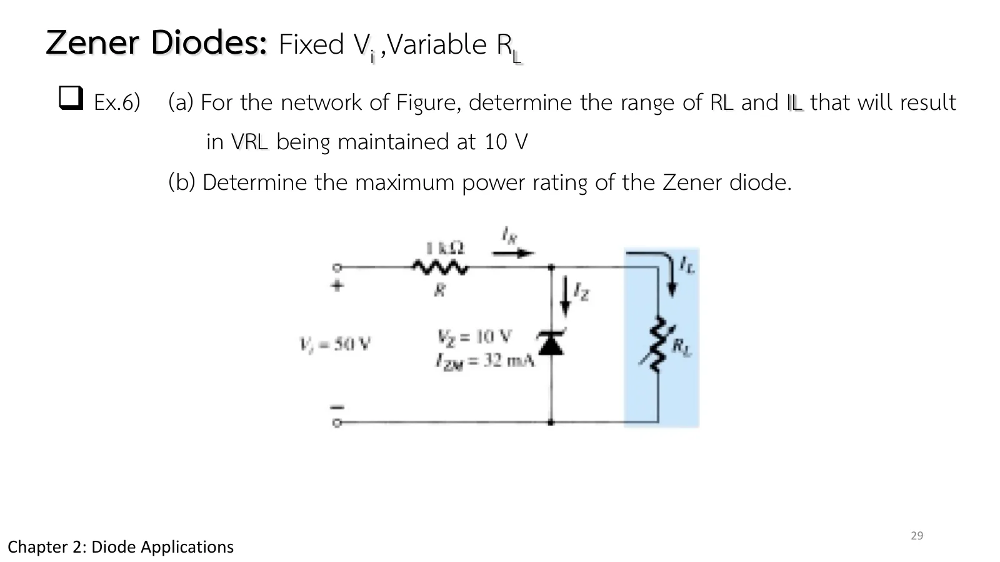
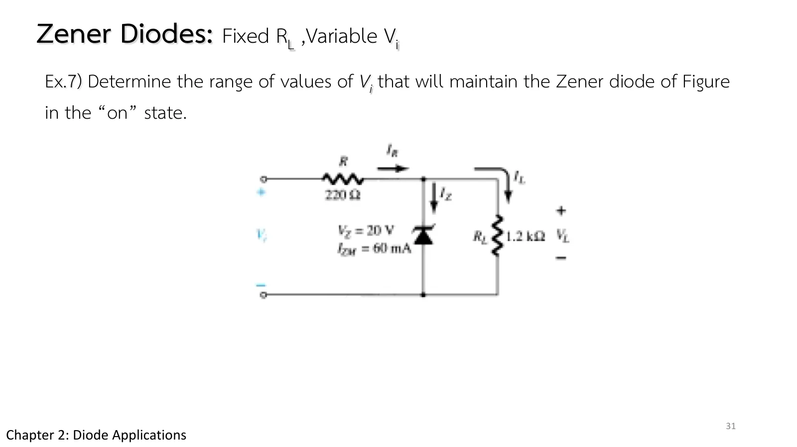

ซีเนอร์ไดโอดและวงจรคุมแรงดัน Zener diodes and regulators
Zener diodes and regulators Holding the load voltage at \(V_Z\)
สไลด์ชุดที่ 2 หน้า 21–31 ใช้ย่านซีเนอร์ (หน้า 1.4) ให้เป็นประโยชน์ ซีเนอร์ไดโอดที่ต่อแบบไบแอสกลับและนำกระแสอยู่ในย่านซีเนอร์ มีแรงดันคร่อมคงที่เท่ากับ \(V_Z\) จึงใช้คุมแรงดันของโหลด (regulator) หรือเป็นแรงดันอ้างอิง หน้านี้มีภาพจำลองวงจรคุมแรงดันที่ปรับ \(V_i\), \(R_L\) และ R ได้ (ส่วน A) โจทย์ Ex.5–Ex.7 ซึ่งครอบคลุมทั้งกรณี \(V_i\) และ \(R_L\) คงที่ \(V_i\) คงที่แต่ \(R_L\) ปรับได้ และ \(R_L\) คงที่แต่ \(V_i\) ปรับได้ และแบบฝึกเพิ่ม
Part II slides pp. 21–31 put the Zener region of page 1.4 to use. A Zener diode reverse-biased into its Zener region holds a fixed \(V_Z\) across itself, so it can regulate the voltage of a load or serve as a reference. This page has a regulator whose \(V_i\), \(R_L\) and R you can change (section A), Ex.5–Ex.7, covering fixed \(V_i\) and \(R_L\), fixed \(V_i\) with a variable \(R_L\), and fixed \(R_L\) with a variable \(V_i\), and more practice.
ประเด็นสำคัญของหน้านี้
- แบบจำลองของซีเนอร์: เมื่อนำ (ในย่านซีเนอร์) คือแบตเตอรี \(V_Z\) เมื่อแรงดันคร่อมน้อยกว่า \(V_Z\) (แต่มากกว่า 0) ไม่นำ เป็นเปิดวงจร (สไลด์ชุดที่ 2 หน้า 21)
- สองขั้นตอน: ขั้นที่ 1 ถอดซีเนอร์ออก แล้วหาแรงดัน V คร่อมช่องเปิด ถ้า \(V \ge V_Z\) ซีเนอร์นำ ขั้นที่ 2 แทนด้วยแบบจำลองที่ตรงกับสถานะ แล้วหาค่าที่ต้องการ (สไลด์ชุดที่ 2 หน้า 22–23)
- เมื่อซีเนอร์นำ: \(V_L = V_Z\) กระแสของ R คงที่ \(I_R = (V_i - V_Z)/R\) ส่วนที่โหลดไม่ใช้ไหลผ่านซีเนอร์ \(I_Z = I_R - I_L\) และกำลัง \(P_Z = V_ZI_Z\) ต้องไม่เกิน \(P_{ZM}\) (สไลด์ชุดที่ 2 หน้า 23)
- ช่วงที่คุมแรงดันได้: \(R_L\) น้อยเกินไปทำให้แรงดันไม่ถึง \(V_Z\) ส่วน \(R_L\) มากเกินไปหรือ \(V_i\) สูงเกินไปทำให้ \(I_Z\) เกิน \(I_{ZM}\) (สไลด์ชุดที่ 2 หน้า 26–30)
Key points of this page
- The Zener model: on (in its Zener region) it is a battery \(V_Z\); with less than \(V_Z\) across it (but more than 0) it is off, an open circuit (Part II slide p. 21).
- Two steps: step 1, take the Zener out and find the voltage V across the gap; if \(V \ge V_Z\) the Zener is on. Step 2, substitute the model for that state and solve (Part II slides pp. 22–23).
- With the Zener on: \(V_L = V_Z\), R carries a fixed \(I_R = (V_i - V_Z)/R\), what the load does not take flows through the Zener, \(I_Z = I_R - I_L\), and \(P_Z = V_ZI_Z\) must stay below \(P_{ZM}\) (Part II slide p. 23).
- The regulating range: too small an \(R_L\) leaves the voltage short of \(V_Z\), while too large an \(R_L\) or too high a \(V_i\) pushes \(I_Z\) past \(I_{ZM}\) (Part II slides pp. 26–30).

V > 0 V.">![Part II slide 24, Zener Diodes, summary: Zener diodes are most frequently used in regulator networks or as a reference voltage. The figure is a simple regulator designed to maintain a fixed voltage across the load R_L: V_i, R along the top, the Zener with V_Z, I_Z and P_ZM down the middle, and R_L. For applied voltages greater than required to turn the Zener on, the voltage across the load is maintained at V_Z volts; employed as a reference voltage, the Zener provides a level for comparison against other voltages.](slides/ch2b/p24.webp)
วงจรคุมแรงดันด้วยซีเนอร์
A Zener regulator

![Part II slide 23, Zener Diodes: step 2, substitute the appropriate equivalent circuit and solve for the desired unknowns. The on state results in the equivalent network of the figure; since voltages across parallel elements must be the same, V_L = V_Z. The Zener diode current must be determined by Kirchhoff's current law: I_L = V_L/R_L and I_R = V_R/R = (V_i − V_L)/R, I_Z = I_R − I_L. The power dissipated by the Zener diode is P_Z = V_Z I_Z; quote, P_Z must be less than the P_ZM specified for the device.](slides/ch2b/p23.webp)
วงจรของ Ex.5: ซีเนอร์ \(V_Z\) = 10 V, \(P_{ZM}\) = 30 mW เลื่อน \(V_i\) และ \(R_L\) แล้วดูว่าซีเนอร์นำเมื่อใด แรงดันของโหลดคงที่ที่ 10 V ในช่วงใด และกำลังของซีเนอร์ไม่เกินพิกัดในช่วงใด แผงข้างภาพแสดงกระแสทั้งสาม ตัวแก้วงจรใช้แบบจำลองแบตเตอรี \(V_Z\) ของสไลด์หน้า 21
The circuit of Ex.5: a Zener with \(V_Z\) = 10 V and \(P_{ZM}\) = 30 mW. Move \(V_i\) and \(R_L\) and see when the Zener turns on, over what range the load voltage stays at 10 V, and where the Zener's power stays within its rating. The side panel shows the three currents; the solver uses the battery model \(V_Z\) of slide p. 21.
Ex.5: ซีเนอร์นำหรือไม่นำ
Ex.5: is the Zener on or off?

\(V_i\) = 16 V, R = 1 kΩ, ซีเนอร์ \(V_Z\) = 10 V, \(P_{ZM}\) = 30 mW และ \(R_L\) = 1.2 kΩ (a) จงหา \(V_L\), \(V_R\), \(I_Z\) และ \(P_Z\) (b) ทำซ้ำเมื่อ \(R_L\) = 3 kΩ
\(V_i\) = 16 V, R = 1 kΩ, a Zener with \(V_Z\) = 10 V and \(P_{ZM}\) = 30 mW, and \(R_L\) = 1.2 kΩ. (a) Determine \(V_L\), \(V_R\), \(I_Z\) and \(P_Z\). (b) Repeat with \(R_L\) = 3 kΩ.
ขั้นที่ 1 ของแต่ละข้อย่อยถอดซีเนอร์ออก (ช่องเปิด) แล้ววัดแรงดัน V คร่อมช่องเปิด ลองตอบก่อน
Step 1 of each part takes the Zener out (a gap) and measures the voltage V across the gap. Try it first.
Ex.6: \(V_i\) คงที่ \(R_L\) ปรับได้
Ex.6: fixed \(V_i\), variable \(R_L\)
![Part II slide 26, Zener Diodes, fixed V_i, variable R_L: due to the offset voltage V_Z, there is a specific range of resistor values (and therefore load current) which will ensure that the Zener is in the on state. Too small a load resistance R_L will result in a voltage V_L across the load less than V_Z, and the Zener will be in the off state. To determine the minimum load resistance that will turn the Zener on: V_L = V_Z = R_L V_i/(R_L + R), boxed R_Lmin = R V_Z/(V_i − V_Z). Any load resistance greater than this ensures the Zener is on.](slides/ch2b/p26.webp)



\(V_i\) = 50 V, R = 1 kΩ, ซีเนอร์ \(V_Z\) = 10 V, \(I_{ZM}\) = 32 mA และ \(R_L\) ปรับได้ (a) จงหาช่วงของ \(R_L\) และ \(I_L\) ที่ทำให้แรงดันของโหลดคงที่ 10 V (b) จงหาพิกัดกำลังสูงสุดของซีเนอร์
\(V_i\) = 50 V, R = 1 kΩ, a Zener with \(V_Z\) = 10 V and \(I_{ZM}\) = 32 mA, and a variable \(R_L\). (a) Determine the range of \(R_L\) and \(I_L\) that keeps the load at 10 V. (b) Determine the maximum power rating of the Zener.
วงจรในภาพจำลองใช้ \(R_L\) ที่ขอบทั้งสองของช่วง กราฟข้างภาพคือ \(V_L\) เทียบกับ \(R_L\) ลองตอบก่อน
The simulated circuit uses \(R_L\) at the two ends of the range; the graph is \(V_L\) against \(R_L\). Try it first.
Ex.7: \(R_L\) คงที่ \(V_i\) ปรับได้
Ex.7: fixed \(R_L\), variable \(V_i\)

R = 220 Ω, ซีเนอร์ \(V_Z\) = 20 V, \(I_{ZM}\) = 60 mA และ \(R_L\) = 1.2 kΩ จงหาช่วงของ \(V_i\) ที่ทำให้ซีเนอร์ยังนำอยู่
R = 220 Ω, a Zener with \(V_Z\) = 20 V and \(I_{ZM}\) = 60 mA, and \(R_L\) = 1.2 kΩ. Determine the range of \(V_i\) that keeps the Zener on.
วงจรในภาพจำลองใช้ \(V_i\) ที่ขอบทั้งสองของช่วง กราฟข้างภาพคือ \(V_L\) เทียบกับ \(V_i\) ลองตอบก่อน
The simulated circuit uses \(V_i\) at the two ends of the range; the graph is \(V_L\) against \(V_i\). Try it first.
ฝึกเพิ่ม
More practice
ลองทำดู 1 — ซีเนอร์ดูดส่วนเกิน
- ส่วน A ตั้ง \(V_i\) = 16 V แล้วเลื่อน \(R_L\) จาก 1 kΩ ขึ้นไป: ที่ 1.5 kΩ แรงดันของตัวแบ่งแรงดันถึง 9.6 V ยังไม่ถึง 10 V พอเกิน 1.67 kΩ ซีเนอร์นำ และ \(V_L\) ค้างที่ 10 V
- เลื่อน \(R_L\) ต่อขึ้นไป: \(I_L\) ลดลง แต่ \(I_R\) คงที่ 6 mA ส่วนที่ลดลงไปเข้าซีเนอร์ จน \(P_Z\) เกิน 30 mW เมื่อ \(R_L\) ราว 3.33 kΩ ขึ้นไป
- คง \(R_L\) = 3 kΩ แล้วเพิ่ม \(V_i\): \(V_L\) ไม่เปลี่ยน แต่ \(I_Z\) และ \(P_Z\) เพิ่มขึ้นตาม
ลองทำดู 2 — สองขั้นตอนเสมอ
- ถ้าข้ามขั้นที่ 1 แล้วถือว่า \(V_L = V_Z\) ทันที ข้อ 1 (a) จะได้ \(I_Z\) ติดลบ ซึ่งเป็นไปไม่ได้ แปลว่าสมมติสถานะผิด
- ข้อ 2 ขั้นที่ 1: ที่ \(R_{L\min}\) = 250 Ω ซีเนอร์เพิ่งเริ่มนำ ชี้เมาส์ที่ซีเนอร์ในภาพจำลอง กระแสเกือบเป็นศูนย์
Try this 1 — the Zener takes the excess
- In section A set \(V_i\) = 16 V and move \(R_L\) up from 1 kΩ: at 1.5 kΩ the divider gives 9.6 V, still short of 10 V; past 1.67 kΩ the Zener turns on and \(V_L\) stays at 10 V.
- Keep raising \(R_L\): \(I_L\) falls, but \(I_R\) stays at 6 mA and the difference goes into the Zener, until \(P_Z\) passes 30 mW from about 3.33 kΩ on.
- Hold \(R_L\) = 3 kΩ and raise \(V_i\): \(V_L\) does not change, but \(I_Z\) and \(P_Z\) rise with it.
Try this 2 — always two steps
- Skip step 1 and take \(V_L = V_Z\) straight away, and problem 1 (a) gives a negative \(I_Z\), which is impossible: the state was assumed wrongly.
- Problem 2, step 1: at \(R_{L\min}\) = 250 Ω the Zener is just turning on; hover over it in the simulation and its current is almost zero.